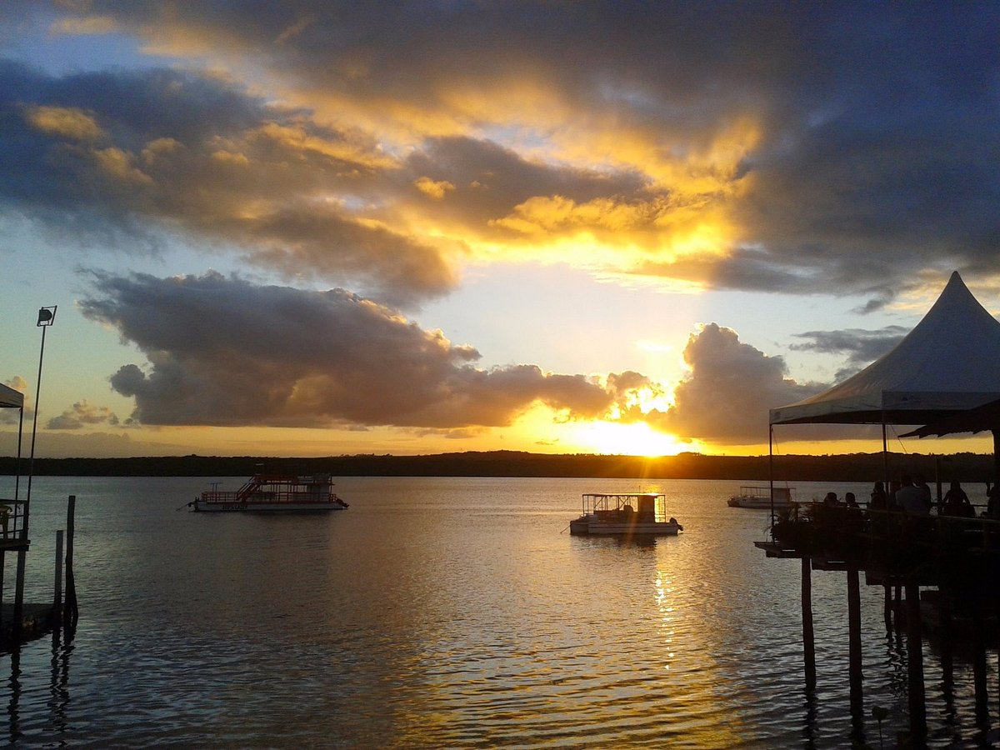
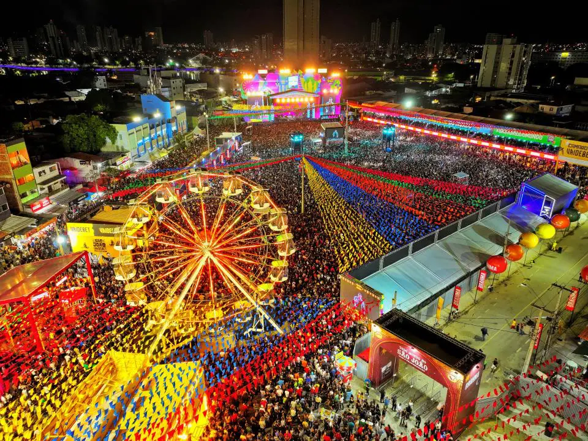

📍 Localização e História
A Paraíba está localizada na região Nordeste do Brasil e faz fronteira com o Rio Grande do Norte, Pernambuco e o Oceano Atlântico. Sua capital é João Pessoa, conhecida como uma das cidades mais verdes do mundo e o ponto mais oriental das Américas, onde o sol nasce primeiro no continente. O estado tem uma rica história, marcada pela presença indígena, pela colonização portuguesa e por fortes tradições culturais.

🏖️ Pontos Turísticos
A Paraíba é famosa por suas belas praias e por seu patrimônio histórico. Entre os principais destinos estão a Praia de Tambaú e a Ponta do Seixas, ponto mais oriental das Américas. A cidade de Cabedelo encanta com o pôr do sol ao som do bolero de Ravel na Praia do Jacaré. No interior, o destaque é o Centro Histórico de Areia e a cidade de Campina Grande, que abriga o Maior São João do Mundo.
🎭 Cultura e Tradições
A cultura paraibana é uma das mais fortes do Nordeste. O estado é berço de grandes nomes como Jackson do Pandeiro e Ariano Suassuna. O São João de Campina Grande é uma das festas mais famosas do Brasil, com música, dança e comidas típicas. Na gastronomia, destacam-se o rubacão, a carne de sol com macaxeira e a tradicional canjica nordestina.
🌿 Natureza e Economia
Com paisagens que variam do litoral à caatinga, a Paraíba possui grande diversidade natural. A economia do estado é impulsionada pelo turismo, agricultura, comércio e indústria têxtil. Além disso, João Pessoa é referência em sustentabilidade e qualidade de vida, sendo uma das capitais mais arborizadas do país.
⬅ Voltar